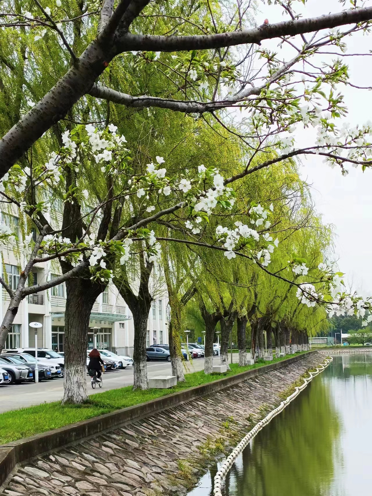

MY HOBBY - 平淡生活里的一些美好(๑╹ヮ╹๑)ﾉ
如果诗与远方太过缥缈,那么当下的兴趣爱好便是最实际的浪漫主义。
If poetry and distance are too illusory, then the current interest is the most practical romantic.
大千世界，千姿百态。
The world is full of shapes and forms.
事有不同，各人的兴趣亦有不同。
Everyone has different hobbies, just like there are all kinds of things happening in the world.
———— 摄影 ————




四季更迭
,
光阴流转
。